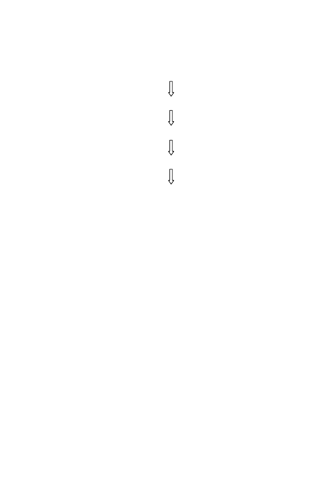

Exercises
141
Exercise 6.
Given
G
: 2 4 5 3 1, a set of reversals that transform
G
to the
identity permutation
I
is
G
: [2 4 5 3 1]
1 [3 5 4 2]
1 2 [4 5 3]
1 2 3 [5 4]
I
: 1 2 3 4 5
Show by cycle decomposition that this set of reversals does not correspond
to the minimum
d
(
G, I
).
Exercise 7.
The two-dimensional plot shown in Fig. 5.4D can be expressed
as a one-dimensional graph using the conventions in Section 5.3. Recall that
in the simulation that led to Fig. 5.4D, sequence
x
was not rearranged.
a. Label the ends of the
i
th line segment
ia
and
ib
using the order and orien-
tation of segments in
x
to determine the values of
i
and the assignments
a
or
b
.
b. Make a diagram showing
y3
as a set of oriented arrows with the appro-
priate labelling. (For the purposes of this problem, the arrows can all be
of the same length. See Section 5.3.)
c. Draw a graph corresponding to the oriented sequence blocks in part b
of this problem, and perform a cycle decomposition to verify that the
computed reversal distance agrees with the actual number of reversals
used to produce Fig. 5.4D (Computational Example 5.2).
Exercise 8.
Reproduce Fig. 5.4D, except this time allow enough space to add
a point labeled 0 in the lower left-hand corner and a point labeled 8 in the
upper right-hand corner, with a gap separating these points from the first
and last oriented segments, respectively. Shorten segments 1–7, and add the
labeling as in Exercise 7a.
a. Project all
ia
and
ib
onto the
y3
axis. (Each point should be separated
from its neighbors by a space because the segments were shortened above.)
Connect adjacent points with broken lines, except for points belonging to
the same line segment.
b. Using solid line segments, connect the ends of segments 1-7 in the order
of appearance in
x
(i.e., connect
ib
to (
i
+ 1)
a
, etc.), and project these
solid line segments as arcs onto the
y3
axis.